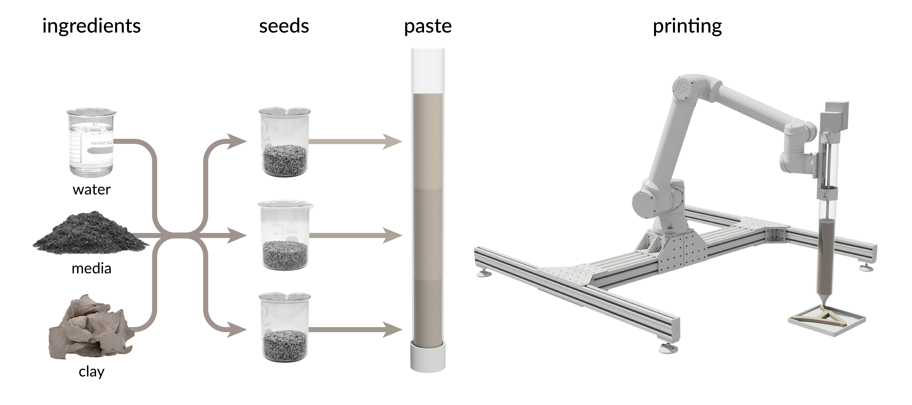
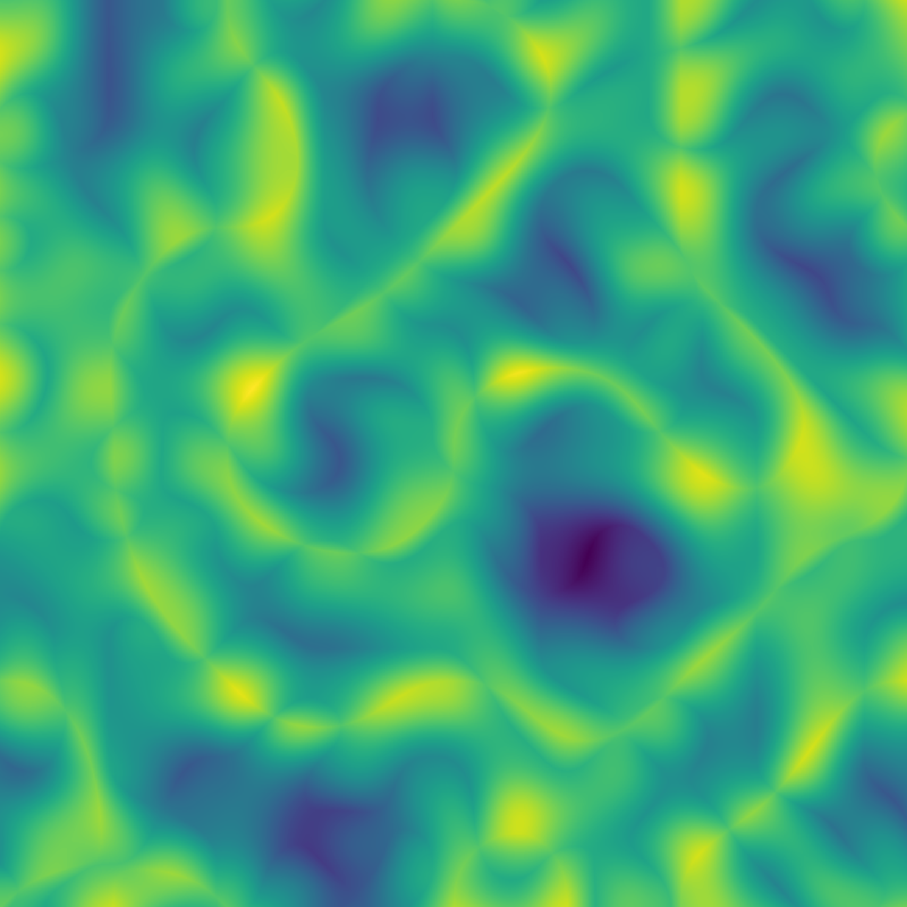
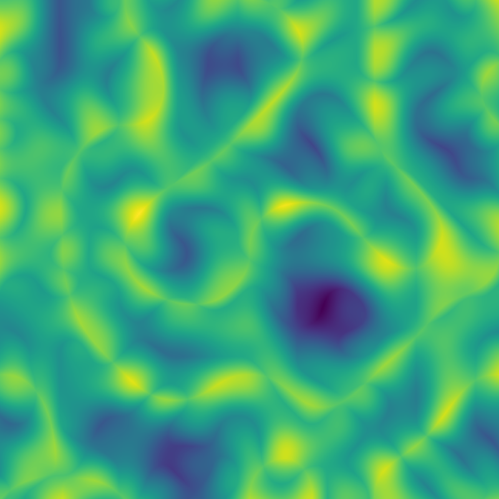

Ecological Robotics
Brendan Harmon &
Hye Yeon Nam

Ecological Robotics
Robots in Architecture
- Autonomous brick laying
- Weaving tensile structures
- Assembling timber frames
- Constructing complex formwork
- 3D printing
- Etc…
Robots in Landscape Architecture
- Aerial Sensing
- Autonomous Planting
- Autonomous Mowing
- Autonomous Earthmoving
Pasted-Based Robotic Planting

Implementation

Capabilities
- Computational patterns
- Microtopography
- High precision
- High germination rate
Computational Planting Design
 

Procedural Noise Prints
Living Typography
Robotic planting as living typeface
Echo
Robotic planting as musical interface
Field Experiment
Field Experiment
Future Work
- Deploy on unmanned ground vehicles
- Integrate machine vision & sensors
- Develop new methods for autonomous planting
- Design algorithmic planting patterns
- Conducted controlled field experiments
Field Robotics
Clearpath Warthog UGV
Conclusion
- Ecological performance
- Iterative, adaptive planting
- Algorithmic aesthetics